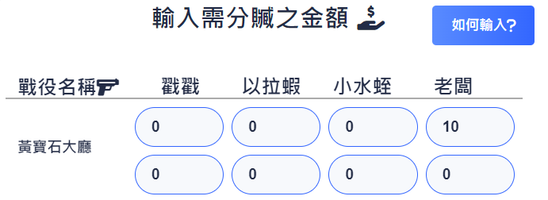

<nb-card>
    <nb-card-header class="text-center">
        我該如何輸入<i class="fa-solid fa-question"></i>
    </nb-card-header>
    <nb-card-body>
        <div class="col-12 row">
            <label class="col-12 title mb-2">假如今天打賭博團老闆在第一場黃寶石大廳掉了一塊紅鋼，那麼就在老闆的格子內輸入10，如下圖：</label>
            
            <label class="title d-flex justify-content-end" style="color:black;">(隨時可以利用計算按鈕查看目前賭況)</label>
        </div>
    </nb-card-body>
</nb-card>
